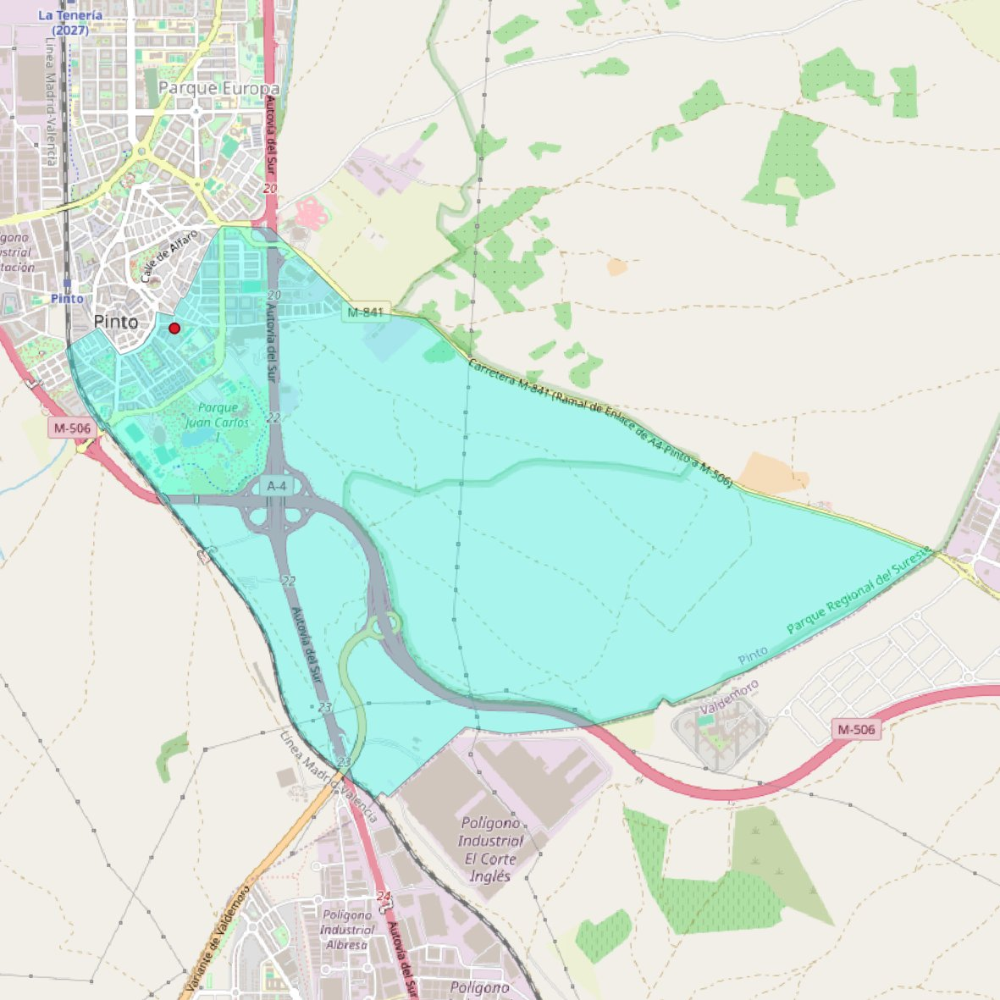

Pinto · Arciprestazgo de Valdemoro · Diócesis de Getafe

De cada 100 habitantes, 14 tienen menos de 18 años, 21 tienen 65 o más y 18 han nacido en otro país.
| Parroquia | Arciprestazgo | Diócesis | |
|---|---|---|---|
| Habitantes (2025) | 10.300 | 191.258 | 1.729.840 |
| Habitantes por km² | 1.310 | 658 | 751 |
| Edad media (2024) | 44,6 años | 39,8 años | 42,3 años |
| Menores de 18 (2024) | 13,8 % | 20,1 % | 18,2 % |
| 65 o más (2025) | 20,8 % | 13,1 % | 18,4 % |
| Índice de envejecimiento (2025) | 195 | 84 | 127 |
| Nacidos en otro país (2025) | 18,0 % | 20,5 % | 20,3 % |
| Renta por persona (2024) | 16.000 € | 15.500 € | 16.000 € |
| Personas por hogar (2024) | 2,68 | 2,88 | 2,80 |
| Hogares de una persona (2024) | 21,6 % | 19,5 % | 21,0 % |
| Estudios superiores (2024) | 31,7 % | 33,0 % | 32,4 % |
| Paro (2024) | 9,8 % | 8,8 % | 9,1 % |
No hay en esta web ningún desarrollo urbanístico previsto en el territorio de la parroquia.